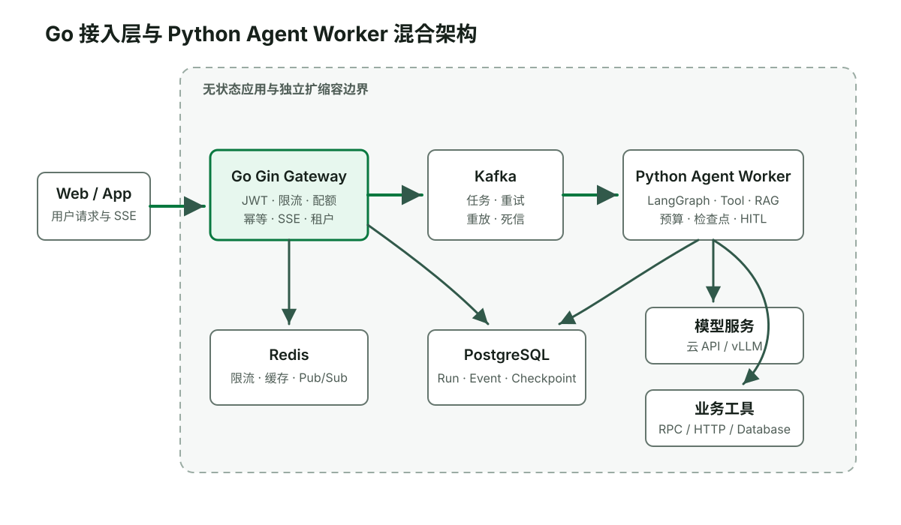
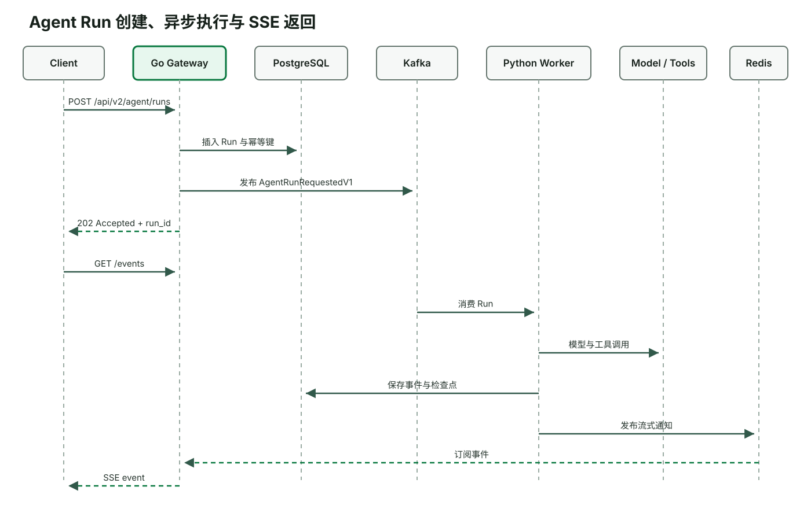

企业级 Agent 混合架构课程设计
文档定位
| 维度 | 结论 |
|---|---|
| 文档类型 | 渐进式实战教程的课程与技术设计文档 |
| 系统阶段 | 从零手写 Python Agent Worker，随后扩展为 Go + Python 混合架构 |
| 主要读者 | Go/Python 后端工程师、架构师、测试工程师、SRE |
| 复杂度 | 重量级：跨语言、异步执行、状态持久化、AI 评测与高并发接入 |
| 上游输入 | 用户确认的课程设计、现有 Agent 教程与项目工程规范 |
本文定义单篇渐进式教程的学习顺序、最终系统边界和验收依据。教程正文是唯一主交付物；代码只作为读者跟随章节逐步写出的练习结果，不单独交付一个需要自行反向理解的成品项目。
目标与范围
课程从一个只依赖 Python 标准库的 Agent Worker 开始。学习者先看见模型如何申请工具、Worker 如何校验和执行工具、结果如何回灌、循环如何退出，再逐章加入真实模型、状态、RAG、人工审批、Go 接入层、Kafka、Redis 和 PostgreSQL。最终练习结果是一个可本地运行、可测试、可压测的企业工单 Agent。[Data-backed]
设计目标如下：
- 学习者能够从 Fake Model 和 Tool Calling 协议开始，逐步构建完整混合系统。[Data-backed]
- Go 网关和 Python Worker 可以独立扩缩容，长连接数量不直接占用 Agent 执行槽位。[Expert judgment]
- 模型输出、工具参数与外部文本均按不可信输入处理。[Research-backed]
- 写操作由确定性后端完成权限、幂等和业务规则校验。[Expert judgment]
- 任务能够暂停审批、进程重启后恢复，并保留审计证据。[Data-backed]
- 每次变更能够通过单元测试、契约测试、集成测试、离线评测和压力测试验证。[Data-backed]
本期不包含模型训练、模型微调、多地域容灾和完整 Kubernetes 运维平台。Kubernetes 仅作为部署扩展章说明水平扩容边界。[Data-backed]
容量数字只作为课程验收目标，不代表生产容量承诺。1000 个并发 SSE 连接用于验证连接层和执行层已经解耦；实际生产容量必须通过目标机器和目标模型重新压测。[Hypothesis]
术语
| 中文名称 | 英文术语 | 在本项目中的含义 |
|---|---|---|
| 智能体运行 | Agent Run | 从接收用户目标到产生最终结果的一次持久化执行 |
| 工具 | Tool | Agent 可以申请调用的受控业务能力 |
| 检查点 | Checkpoint | 状态图在某一步完成后的持久化状态 |
| 人工介入 | Human-in-the-Loop, HITL | 高风险动作执行前暂停并等待授权 |
| 流式事件 | Streaming Event | 通过 Redis 和 SSE 传递的增量状态或文本 |
| 执行预算 | Execution Budget | 最大轮数、总时长、Token 和工具调用次数限制 |
| 离线评测 | Offline Evaluation | 使用固定数据集衡量答案、工具选择和轨迹质量 |
学习路径与最终架构
课程不会在第一章要求学习者同时理解 Go、Kafka、Redis 和 PostgreSQL。每一层只在上一层已经能运行、能解释、能测试之后引入。[Data-backed]
Python 函数调用
→ Fake Model 驱动的 Agent Loop
→ OpenAI 兼容真实模型
→ 工具注册、参数校验、预算与日志
→ 状态持久化、RAG、LangGraph、人工审批
→ Go API 与 SSE
→ Kafka、Redis、PostgreSQL
→ 可观测性、评测、安全与压测
下面的架构图描述课程完成后的系统形态，不是第一章的环境前置条件。
系统采用无状态接入层、异步任务总线和有状态执行层。Go 网关不运行 Agent Loop；Python Worker 不直接维持用户长连接。两者通过持久化任务和流式事件契约协作。[Expert judgment]

图 1：Go 接入层负责连接和流量治理，Python Worker 负责 Agent 状态图，模型推理与业务工具保持独立。
flowchart LR
Client[Web / App] --> Gateway[Go Gin Gateway]
Gateway --> Kafka[Kafka Task Bus]
Kafka --> Worker[Python LangGraph Worker]
Worker --> Model[Model API or vLLM]
Worker --> Tools[Enterprise Tool APIs]
Gateway --> Redis[(Redis)]
Worker --> Redis
Gateway --> Postgres[(PostgreSQL)]
Worker --> Postgres
Go 网关验证 JWT、租户、配额和幂等键，然后创建运行记录并投递任务。Worker 消费任务、加载检查点、执行状态图并发布增量事件。网关订阅事件后通过 SSE 转发给客户端。PostgreSQL 是运行状态和审计事实的持久化来源，Redis 只保存短期缓存、限流计数和实时 Pub/Sub 数据。[Expert judgment]
技术选择
| 组件 | 选择 | 原因 |
|---|---|---|
| 接入层 | Go + Gin | 与当前 Go 后端经验一致，适合大量 SSE 连接、鉴权和限流。[Expert judgment] |
| Agent 编排 | Python + LangGraph | Python AI 生态完整，LangGraph 提供显式状态、检查点和中断恢复。[Research-backed] |
| 任务总线 | Kafka | 支持消费组、顺序控制、重放和死信主题，适合独立扩缩容 Worker。[Expert judgment] |
| 实时事件 | Redis Pub/Sub | 事件只用于在线转发，丢失时可从 PostgreSQL 事件表补读。[Expert judgment] |
| 持久化 | PostgreSQL + pgvector | 同时承载关系数据、审计、检查点和课程规模的向量检索，减少基础设施数量。[Expert judgment] |
| 模型访问 | OpenAI 兼容协议 | 课程代码可在多个模型网关和 vLLM 之间切换。[Research-backed] |
| 可观测性 | OpenTelemetry | 统一 Go、Python、Kafka、模型和工具调用的 Trace 上下文。[Research-backed] |
模块边界
| 模块 | 单一职责 | 输入 | 输出 | 明确不负责 |
|---|---|---|---|---|
| Go Gateway | 管理外部请求和流式连接 | HTTP、JWT、SSE 连接 | 运行资源、流式事件、统一错误 | Agent 推理、RAG、业务写入 |
| Run Service | 管理 Agent Run 生命周期 | 创建、取消、审批命令 | 运行状态和领域事件 | 调用模型 |
| Kafka Adapter | 可靠发布和消费任务 | 领域任务或事件 | Kafka Record | 业务决策 |
| Agent Worker | 执行 LangGraph 状态图 | AgentRunRequestedV1 |
状态、工具申请、最终答案 | 信任模型输出或绕过工具权限 |
| Tool Gateway | 校验并执行工具 | 工具名称、参数、调用身份 | 结构化工具结果 | 自主选择下一工具 |
| RAG Service | 返回带权限过滤的证据 | 查询、租户、主体权限 | 文档片段和引用 | 生成最终答案 |
| State Store | 保存运行事实和检查点 | 状态更新、事件、审计记录 | 可恢复状态 | 实时推送 |
| Evaluation Runner | 回放固定数据集并评分 | 版本、数据集、配置 | 质量、延迟、成本报告 | 生产流量处理 |
模块依赖方向固定为：接入层依赖契约和端口，适配器依赖外部基础设施，领域模块不反向依赖 Gin、Kafka 或模型 SDK。[Expert judgment]
核心运行流程

图 2：HTTP 请求只负责创建运行；真正的 Agent 执行在 Worker 中完成，结果通过事件流返回。
sequenceDiagram
participant C as Client
participant G as Go Gateway
participant DB as PostgreSQL
participant K as Kafka
participant W as Python Worker
participant M as Model and Tools
participant R as Redis
C->>G: POST /api/v2/agent/runs
G->>DB: insert run with idempotency key
G->>K: publish AgentRunRequestedV1
G-->>C: 202 Accepted with run_id
C->>G: GET /events
K->>W: consume run
W->>DB: load checkpoint
W->>M: model and tool calls
W->>DB: append event and checkpoint
W->>R: publish streaming event
R->>G: event notification
G-->>C: SSE event
执行状态
PENDING
-> RUNNING
-> WAITING_APPROVAL
-> RUNNING
-> SUCCEEDED
RUNNING -> FAILED
RUNNING -> CANCELLED
WAITING_APPROVAL -> REJECTED
状态更新使用数据库条件更新，只有允许的前置状态才能进入下一状态。重复 Kafka 消息先读取运行状态和消息去重记录，已处理消息直接确认，不重复执行副作用。[Expert judgment]
HTTP 接口
所有接口使用 /api/v2/ 前缀，响应错误遵循统一错误模型。[Data-backed]
接口目录
| 编号 | 方法与路径 | 用途 | 权限 |
|---|---|---|---|
| API-01 | POST /api/v2/agent/runs |
创建 Agent Run | agent:run:create |
| API-02 | GET /api/v2/agent/runs/{run_id} |
查询运行状态 | 运行所属租户成员 |
| API-03 | GET /api/v2/agent/runs/{run_id}/events |
建立 SSE 事件流 | 运行所属租户成员 |
| API-04 | POST /api/v2/agent/runs/{run_id}/approvals |
批准或拒绝高风险动作 | agent:run:approve |
| API-05 | POST /api/v2/agent/runs/{run_id}/cancel |
请求取消运行 | agent:run:cancel |
API-01 创建运行
| 字段 | 约束 |
|---|---|
| 请求头 | Authorization: Bearer <JWT>；Idempotency-Key 必填，长度 16 至 128 |
| 请求体 | input：字符串，1 至 10000 字符；conversation_id：UUID，可选；metadata：对象，可选 |
| 成功响应 | 202 Accepted；{ "run_id": "uuid", "status": "PENDING", "events_url": "..." } |
| 错误 | 400 INVALID_ARGUMENT、401 UNAUTHORIZED、403 FORBIDDEN、409 IDEMPOTENCY_CONFLICT、429 QUOTA_EXCEEDED |
| 幂等 | (tenant_id, idempotency_key) 唯一；相同请求返回原 run_id，不同请求返回冲突 |
API-03 SSE 事件流
| 字段 | 约束 |
|---|---|
| 请求 | Last-Event-ID 可选，用于断线续传 |
| 响应类型 | text/event-stream |
| 事件 | run.status、model.delta、tool.started、tool.completed、approval.required、run.completed、run.failed |
| 保活 | 网关周期发送注释帧；具体间隔由部署环境确认 |
| 恢复 | 先从 PostgreSQL 补读 Last-Event-ID 后事件，再订阅 Redis 实时事件 |
| 错误 | 运行不存在返回 404 RUN_NOT_FOUND；跨租户访问返回 404，避免泄露资源存在性 |
API-04 审批
请求体：
{
"decision": "APPROVE",
"approval_version": 3,
"comment": "verified by operator"
}
approval_version 使用乐观锁防止重复审批。只有审批范围与当前待执行工具完全匹配时，Worker 才能恢复。[Expert judgment]
异步契约
AgentRunRequestedV1
{
"event_id": "uuid",
"event_type": "AgentRunRequestedV1",
"occurred_at": "RFC3339 timestamp",
"trace_id": "W3C trace id",
"tenant_id": "uuid",
"run_id": "uuid",
"input_ref": "database reference",
"attempt": 1
}
消息不携带完整 Prompt、文档正文或敏感工具结果，只携带定位持久化数据所需的引用。[Expert judgment]
AgentEventV1
{
"event_id": 125,
"run_id": "uuid",
"sequence": 9,
"type": "tool.completed",
"occurred_at": "RFC3339 timestamp",
"payload": {},
"visibility": "USER"
}
同一 run_id 的 sequence 单调递增。Redis 消息只用于通知；完整事件先落 PostgreSQL，再发布 Redis，客户端才能在断线后补读。[Expert judgment]
数据设计
erDiagram
TENANT ||--o{ AGENT_RUN : owns
AGENT_RUN ||--o{ AGENT_EVENT : emits
AGENT_RUN ||--o{ TOOL_EXECUTION : invokes
AGENT_RUN ||--o{ APPROVAL : waits_for
AGENT_RUN ||--o{ CHECKPOINT : persists
TENANT ||--o{ KNOWLEDGE_DOCUMENT : owns
KNOWLEDGE_DOCUMENT ||--o{ KNOWLEDGE_CHUNK : splits
| 表 | 关键字段 | 完整性规则 |
|---|---|---|
agent_runs |
id、tenant_id、status、input_hash、idempotency_key、version |
(tenant_id, idempotency_key) 唯一 |
agent_events |
run_id、sequence、type、payload、visibility |
(run_id, sequence) 唯一 |
tool_executions |
tool_call_id、run_id、tool_name、arguments_hash、status、result_ref |
tool_call_id 唯一 |
approvals |
run_id、version、decision、scope_hash、reviewer_id |
(run_id, version) 唯一 |
agent_checkpoints |
run_id、checkpoint_id、state、created_at |
每次状态图提交后追加 |
knowledge_documents |
tenant_id、source_uri、acl、content_hash |
同租户内容哈希去重 |
knowledge_chunks |
document_id、ordinal、content、embedding、metadata |
(document_id, ordinal) 唯一 |
所有查询必须显式携带 tenant_id。课程同时演示应用层租户过滤和 PostgreSQL Row Level Security，测试跨租户读取必须返回空结果。[Expert judgment]
Agent 状态图
flowchart TD
Load[Load Run State] --> Budget{Budget Available}
Budget -->|no| Fail[Fail with Budget Exceeded]
Budget -->|yes| Decide[Model Decision]
Decide -->|final answer| Complete[Persist Completion]
Decide -->|tool call| Validate[Validate Tool Request]
Validate -->|read tool| Execute[Execute Tool]
Validate -->|write tool| Approve{Approval Required}
Approve -->|yes| Pause[Persist Interrupt]
Approve -->|approved| Execute
Execute --> Observe[Persist Result]
Observe --> Budget
Agent State 至少包含 run_id、tenant_id、消息摘要、剩余预算、已执行工具指纹、当前审批、最后事件序号和错误上下文。原始 JWT 不进入检查点；Worker 使用短期服务凭证并根据持久化授权上下文重新鉴权。[Expert judgment]
工具安全
工具按风险分为三类：
| 风险 | 示例 | 执行要求 |
|---|---|---|
| 只读 | 查询工单、搜索知识库 | 参数校验、租户过滤、超时 |
| 可逆写入 | 创建工单、添加评论 | 权限、幂等键、审计、补偿动作 |
| 高风险写入 | 关闭工单、修改权限 | 权限、作用域审批、二次校验、审计 |
模型提供的工具名和参数必须经过白名单、Pydantic 或 go-playground/validator Schema、权限和业务规则校验。SQL 只使用参数化查询。工具结果进入模型上下文前删除敏感字段并限制长度。[Data-backed]
故障处理
| 故障 | 处理策略 | 是否重试 |
|---|---|---|
| 模型网络超时 | 指数退避并使用抖动；超过运行预算后失败或降级 | 仅瞬时错误 |
| 模型格式错误 | 将结构化校验错误反馈模型一次；再次失败则终止 | 最多一次纠正 |
| Kafka 重复消息 | event_id 去重和运行状态检查 |
不重复副作用 |
| Worker 崩溃 | 新 Worker 从最后检查点恢复 | 自动 |
| 工具超时 | 记录未知结果；查询幂等状态后再决定是否重试 | 依工具语义 |
| Redis 不可用 | 事件继续落库；SSE 降级为数据库轮询或重连 | 后台恢复 |
| PostgreSQL 不可用 | 停止接收新 Run；现有 Worker 不执行新副作用 | 熔断 |
| 审批过期 | Run 转为 FAILED 或 CANCELLED，不执行工具 |
不重试 |
| 超出 Token 或轮数 | 输出结构化预算错误并保存轨迹 | 不重试 |
重试边界属于调用方：模型调用由 Worker 重试，业务工具由 Tool Gateway 根据工具策略重试，Kafka 消费由消费者和死信主题管理。禁止多层同时重试同一个调用。[Expert judgment]
可观测性
每个 Run 建立一条端到端 Trace，Go 网关把 W3C Trace Context 写入 Kafka Header，Python Worker 恢复上下文。[Research-backed]
日志字段采用结构化格式：
| 中文名称 | 字段 |
|---|---|
| 租户标识 | tenant_id |
| 运行标识 | run_id |
| 链路标识 | trace_id |
| 工具调用标识 | tool_call_id |
| 模型名称 | model |
| 输入 Token | input_tokens |
| 输出 Token | output_tokens |
| 估算成本 | estimated_cost |
| 执行阶段 | phase |
| 持续时间 | duration_ms |
Prompt、JWT、原始文档和完整工具结果默认不写普通日志。调试采样必须经过脱敏并设置短保留期。[Expert judgment]
核心指标包括创建 Run 的 HTTP 延迟、SSE 活跃连接、Kafka Lag、运行排队时间、每阶段耗时、模型首 Token 延迟、工具失败率、恢复次数、审批等待时间、每 Run Token 和成本、评测通过率。
测试设计
| 测试层 | 验证对象 | 代表场景 |
|---|---|---|
| Go 单元测试 | 鉴权、限流、幂等、SSE 补读 | 相同键相同请求、相同键不同请求 |
| Python 单元测试 | 状态转移、预算、工具校验 | 重复工具、未知工具、超轮数 |
| 契约测试 | HTTP、Kafka、SSE Schema | Go 生产消息能被 Python 解析 |
| 集成测试 | PostgreSQL、Redis、Kafka | 创建 Run 到最终事件 |
| Agent 评测 | 答案、引用、工具选择、轨迹 | 正确工具、禁止工具、拒答 |
| 安全测试 | 越权、注入、敏感信息 | 跨租户、间接提示词注入 |
| 故障注入 | 崩溃、超时、断连、重复消息 | Worker 在工具前后被终止 |
| 压力测试 | 连接并发和任务吞吐 | 1000 SSE 连接与受控 Worker 槽位 |
测试日志按用户、Go 网关、Kafka、Python Worker、模型、工具和数据库分别展示时间线。跳过的步骤必须记录跳过原因；参数表使用“中文名称（english_field）”表头。[Data-backed]
课程组织
教程采用四个阶段、十二章。读者始终在教程正文的指引下修改同一组练习文件，每章先获得一个可观察的结果，再解释新增抽象。
| 阶段与章 | 可运行结果 | 验收证据 |
|---|---|---|
| 阶段一·第 1 章 | Python 环境、领域消息与 Fake Model | 不联网完成一次模型响应 |
| 阶段一·第 2 章 | 裸 Python Agent Loop | 工具申请、执行、回灌和退出的逐轮日志 |
| 阶段一·第 3 章 | OpenAI 兼容真实模型适配器 | Fake Model 与真实模型使用同一 Worker |
| 阶段一·第 4 章 | 工具注册、Pydantic 校验、执行预算 | 未知工具、坏参数、重复调用和超轮数测试 |
| 阶段二·第 5 章 | 会话状态与检查点 | 进程重启后从检查点恢复 |
| 阶段二·第 6 章 | RAG 与证据引用 | 召回、引用和租户隔离评测 |
| 阶段二·第 7 章 | LangGraph 与人工审批 | 中断、拒绝和恢复测试 |
| 阶段三·第 8 章 | Go /api/v2/ Run API |
鉴权、幂等和统一响应测试 |
| 阶段三·第 9 章 | Go SSE 流式接入 | 事件顺序与断线续传测试 |
| 阶段三·第 10 章 | Kafka、Redis、PostgreSQL | 重复投递、事件补读和死信测试 |
| 阶段四·第 11 章 | 可观测性、安全和离线评测 | Trace、成本、注入、越权和回归报告 |
| 阶段四·第 12 章 | 压测、故障注入和部署 | 连接并发、任务吞吐和恢复报告 |
每章包含环境前置条件、业务背景、原理图、完整文件内容、执行命令、预期输出、正常时间线、对抗场景、测试、故障排查和完成标准。代码只在教程章节中出现，本设计文档不下沉到逐行实现。
教程交付
计算机科学/Agent 开发/
├── 从零搭建高并发企业级Agent系统教程.md
├── images/
│ └── enterprise-agent-tutorial-*.svg
└── README.md
教程内每个代码块都给出目标路径和完整内容，不使用省略号代替关键实现。作者在临时目录按正文顺序重建练习文件并执行命令，验证文档可复现；这些临时验证文件不作为独立项目交付。依赖外部模型密钥的章节保留 Fake Model 路径，使核心测试不依赖网络。[Expert judgment]
实施顺序
- 先写教程的 Python 环境、领域消息和 Fake Model。
- 在教程中逐步完成裸 Agent Loop、日志和确定性单元测试。
- 接入真实兼容模型，再加入工具注册、参数校验和执行预算。
- 加入状态、RAG、LangGraph、检查点和人工审批。
- 在 Worker 边界稳定后实现 Go Run API、统一响应和 SSE。
- 接入 PostgreSQL、Redis 和 Kafka，并验证重复投递与恢复。
- 接入 Trace、指标、离线评测、安全护栏和成本统计。
- 执行集成、故障注入和压力测试，并把实测结果写回对应章节。
设计风险
| 风险 | 影响 | 处理 |
|---|---|---|
| 教程基础设施过多 | 初学者在看到 Agent Loop 前被环境阻塞 | 前四章只使用 Python；外部基础设施从第十章引入 |
| 双语言契约漂移 | 运行时解析失败 | JSON Schema 作为单一来源并运行契约测试 |
| 模型供应商差异 | Tool Calling 行为不同 | 使用兼容协议适配层和 Fake Model |
| Agent 测试不稳定 | 回归结果无法比较 | 分离确定性单测、轨迹评测和真实模型抽样评测 |
| 高并发目标误导 | 把连接数等同于任务吞吐 | 分开测 SSE 连接、队列吞吐和模型并发 |
| 教程与代码不同步 | 学习者无法复现 | 在临时目录按教程顺序重建并执行所有代码块 |